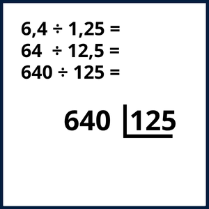
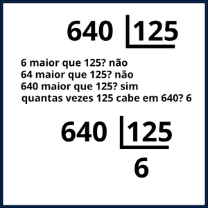
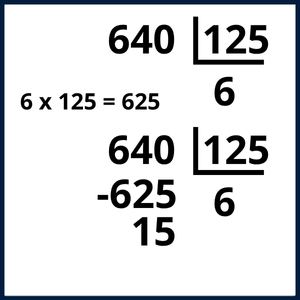
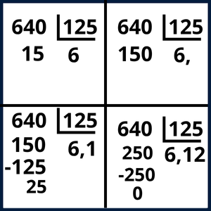

Divisão
Passo 1: Armar a Conta e Igualar as Vírgulas
Armar: Escreva o primeiro numero e, ao lado, desenhe a "chave" ( L ) com o segundo numero dentro.
- Regra da Vírgula: Você não pode ter vírgula no segundo numero. Para resolver isso, iguale as casas decimais:
- Conte quantas casas existem depois da vírgula no segundo numero.
- Mova a vírgula do segundo numero para a direita até que ele vire um número inteiro.
- Agora, mova a vírgula do primeiro numero para a direita o mesmo número de casas.
- Se faltarem números no primeiro numero, complete com zeros.

Passo 2: Começar a Divisão (Da Esquerda para a Direita)
- Olhe para o segundo numero (ex: 125).
- Pegue o menor "pedaço" do primeiro numero, começando da esquerda, que seja maior ou igual ao segundo numero.
Exemplo: Em 144 / 12. Você não pega o 1 (é menor que 12). Você pega o 14. - Pergunte-se: "Quantas vezes o segundo numero cabe nesse pedaço ?"
- Escreva a quantidade de vezes que ele cabe no espaço da resposta.

Passo 3: O Ciclo Principal (Multiplicar, Subtrair, Descer)
Este é o processo que você vai repetir várias vezes.
- 1) Multiplicar: Pegue o número que você acabou de colocar na resposta (6) e multiplique-o pelo segundo numero (125).
- 2) Subtrair: Coloque esse resultado (625) embaixo do "pedaço" que você usou (640) e faça a subtração.
- 3) Descer: "Desça" o próximo algarismo do primeiro numero (no exemplo nao tem) e coloque-o ao lado do Resto da subtração (15).

Passo 4: Repetir o Ciclo e Lidar com a Vírgula no Resultado
Agora, você repete o Passo 3 com o novo número (15) até o resto ser 0 e não sobrar mais nenhuma parte do primeiro numero para descer.
O que fazer se não há mais números para descer, mas o Resto NÃO é 0? (15 é menor que 625 e nao tem o que descer)
- Para continuar, adicione uma vírgula na resposta (fica 6,).
- Ao mesmo tempo, adicione um zero (0) ao lado do Resto (o 15 vira 150).
- Continue a divisão: "Quantas vezes 125 cabe em 150? resposta: 1".
- Coloque esse numero na resposta (6,1) e siga com a divisao adicionando 0 no primeiro numero até nao sobrar mais resto
O que fazer se o primeiro numero original tinha vírgula? (Ex: 12,4 / 2)
- Você faz a divisão normal (12 / 2 = 6). Resto 0.
- No momento exato em que você for "descer" o primeiro número que estava depois da vírgula (o 4), você imediatamente coloca uma vírgula no Quociente.
- Quociente fica 6,.
- Desça o 4. "Quantas vezes 2 cabe em 4?" Resposta: 2.
- O resultado final é 6,2.

GERADOR DE PROBLEMA:
÷
=